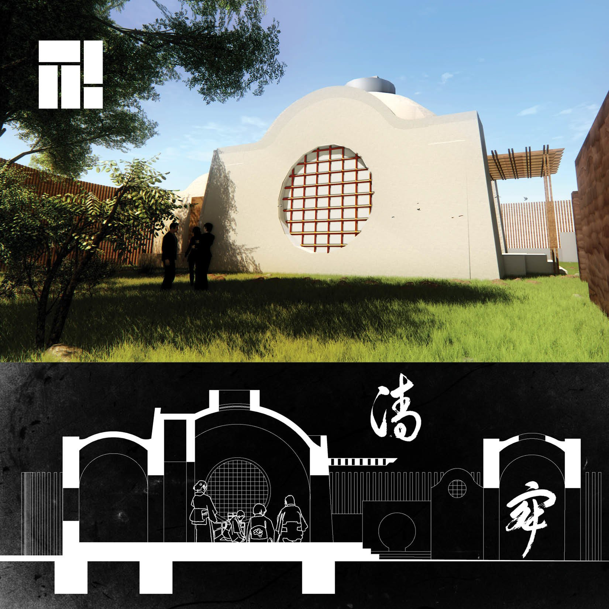

/ FREELANCE — EARTH BUILDING
Mud Brick Tea House
A pilot project with the German University in Cairo and earth-builder Adel Fahmy — a Japanese tea house raised in locally sourced mud brick, pairing a traditional building type with low-carbon construction.

/ OVERVIEW
A Japanese tea house, built in earth.
Building a Japanese tea house from mud brick — as a pilot project — blends a traditional building type with sustainable, low-carbon construction. Mud brick is natural and locally sourced, cutting the carbon footprint of the build while lending the tea house a quiet, rustic character.
The design keeps the familiar elements of the type — sliding screens, tatami mats and a calm garden — so the tea-house experience stays intact. As a pilot, it sets out to show what mud-brick construction can do, and to encourage more sustainable building beyond it.
The work was developed with the German University in Cairo (GUC) and earth-building practitioner Adel Fahmy.
